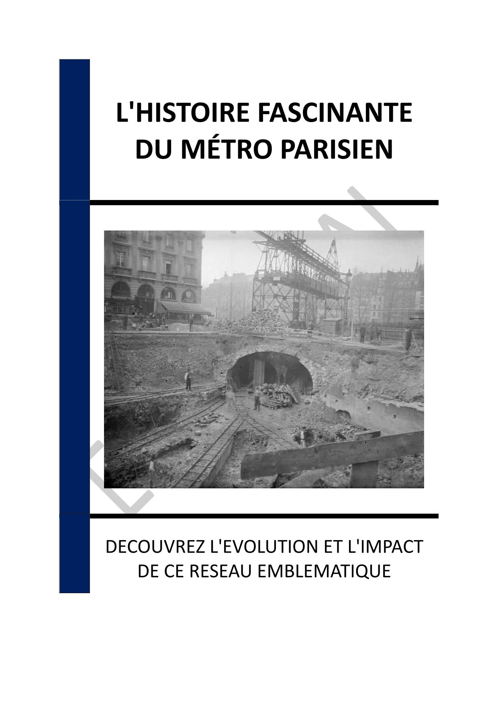

- INTRODUCTION - UN VOYAGE À TRAVERS L'HISTOIRE ET L'ARCHITECTURE DU MÉTRO PARISIEN
- Chapitre 1 - LES ORIGINES DU MÉTRO PARISIEN : CONCEPTION ET INAUGURATION
- Chapitre 2 - L'ÉVOLUTION DU RÉSEAU : EXTENSIONS ET MODERNISATIONS
- Chapitre 3 - LES DÉFIS TECHNIQUES DE LA CONSTRUCTION : INNOVATIONS ET SOLUTIONS
- Chapitre 4 - LE MÉTRO PENDANT LES CONFLITS : RÔLE HISTORIQUE ET SOCIÉTAL
- Chapitre 5 - L'IMPACT CULTUREL DU MÉTRO : ART, MUSIQUE ET IDENTITÉ URBAINE
- Chapitre 6 - ARCHITECTURE DES STATIONS : STYLES ET ÉVOLUTIONS ESTHÉTIQUES
- Chapitre 7 - ACCESSIBILITÉ ET MODERNISATION : VERS UN MÉTRO INCLUSIF
- Chapitre 8 - PROJETS FUTURS : LE GRAND PARIS EXPRESS ET AU-DELÀ
- CONCLUSION - L'HÉRITAGE ET L'AVENIR DU MÉTRO PARISIEN
üìÑ Consulter les annexes du livre
Mentions légales